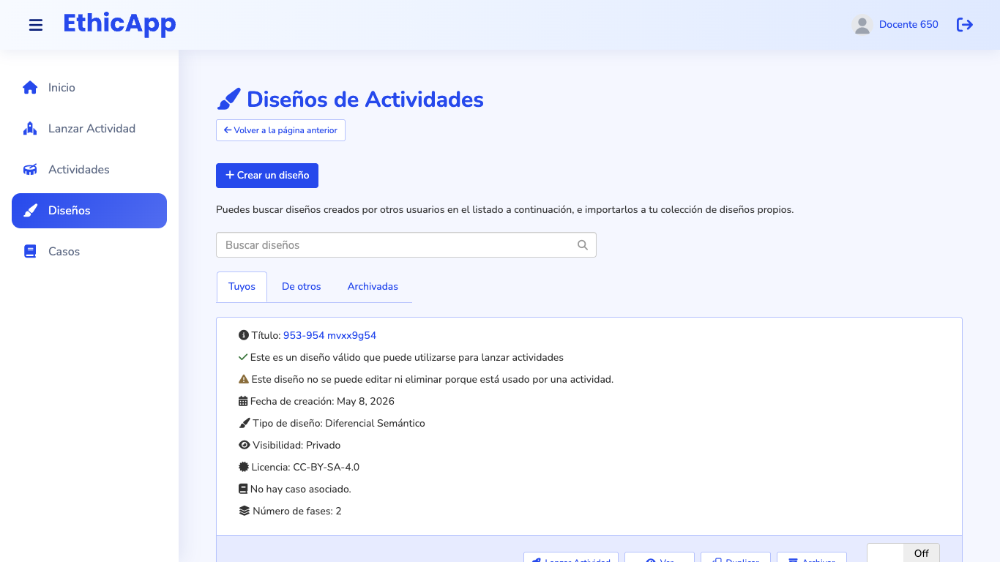
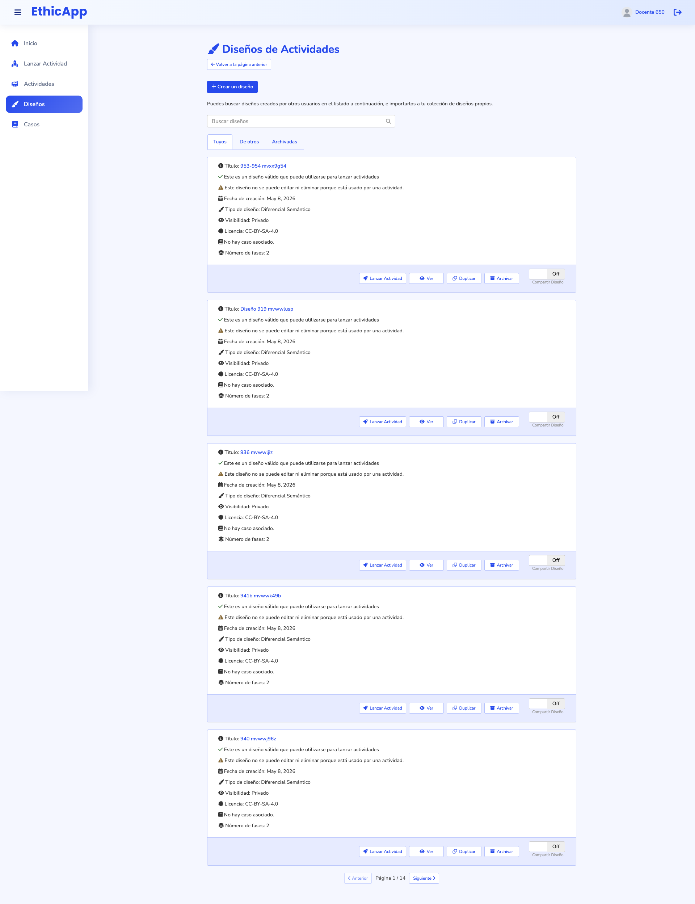

Low fidelity, for discussing the role of the page and how it differs from "Lanzar actividad". Each frame is drawn at its real viewport size and scaled down; the dashed line is the fold. Labels are in Spanish, as a teacher sees them in es-CL. Titles, cases and people are fictional.
fold (bottom of the viewport)numbered notes, explained under each frame
Two pages, two jobs
Today both pages show the same 350–380 px design card with the same controller, and the first button of every card in Diseños is "Lanzar Actividad". The proposal makes each page look like what it does.
Create, edit, organize and share designs; import designs other teachers shared.
Choose one design and start an activity with it.
What it lists
All the teacher's designs, including those with errors; the shared library; the archived designs.
Only the teacher's designs that can be launched.
Shape
A table: status, sharing and edit actions on every row; tabs for mine, library and archived.
A two-step wizard: rows with a radio button, a preview, and a fixed bar with "Siguiente".
Primary action
"Nuevo diseño"; per row, "Editar" (or "Corregir", "Duplicar para editar"); in the library, "Importar".
"Lanzar actividad".
Bridge to the other
The role line links to Lanzar actividad. Each row's menu has "Lanzar actividad con este diseño", which opens the wizard on step 2.
The list's footer links to Diseños with the "Con errores" filter.
Open questions (see the README):
Should "Lanzar actividad con este diseño" stay in the row's menu, or leave Diseños altogether?
Tab name for others' designs: "Biblioteca compartida", "Compartidos por otros docentes", or keep "De otros"?
Should a row click open the design's view (drawn) or its editor?
Deleting a design that has copies: allow it and keep the copies' attribution, or refuse it with a message? Today it fails with a 500 and the page says nothing.
Today

1366 × 768, first screen ("Tuyos"): the first card's details and, at the fold, its buttons, the first of which is "Lanzar Actividad"."De otros": the same card, with "Importar diseño". The page's only explanation is about importing, on every tab.

1920 × 1080, whole page: five 376 px cards per page, 14 pages for 68 designs.
A. 1920 × 1080: my designs
The page says what it is for. "Crea, edita y organiza tus diseños, o importa los que otros docentes comparten." and, next to it, the way out for the other task: "¿Quieres usar uno con tus estudiantes? Lanzar actividad →".
Page actions: "+ Nuevo diseño" (primary) and "Importar de la biblioteca", which opens the library tab.
Tabs with counts: "Mis diseños", "Biblioteca compartida", "Archivados" (today "Tuyos", "De otros", "Archivadas"). The tab is part of the URL, so links can open one directly.
Filters for management, not for launching: search over title, case and tags; type; status ("Listos", "Con errores", "En uso", "Compartidos"). The order is stated: "Más recientes primero".
One table row per design, 12 on the first screen against one card today:
Diseño: title, with the case and the number of phases under it. A click on the title opens the design's view.
Estado: "● Listo"; "⚠ 2 errores", which cannot be launched yet; or "🔒 En uso · 3 actividades", which cannot be edited or deleted. The lock and error lines of today's card become this one column.
Compartido: the switch that shares the design in the library, as today's "Compartir Diseño". A design with errors cannot be shared, so its switch is disabled.
One visible action per row, the one that fits its state: "Editar" for a ready design, "Corregir" for one with errors, "Duplicar para editar" for one in use. Everything else is in the row's "⋯" menu.
The row menu (open on the third row): Ver, Duplicar, Archivar, "Lanzar actividad con este diseño ↗", and Eliminar, in red and last. For a design in use, Eliminar is disabled and says why: "en uso por 3 actividades".
B. 1366 × 768: designs with errors
The "Con errores" filter is on. This is where the wizard's "3 diseños con errores no aparecen · Revisar en Diseños" lands (#!/designs?status=errors).
Each row says how many errors it has and offers "Corregir", which opens the editor on the first error.
At this width the type moves under the title; the columns are Diseño, Estado, Compartido and the actions.
C. 1366 × 768: the shared library, after an import
What the library is, in one line: designs other teachers shared; importing one creates a private, editable copy in Mis diseños, and the original does not change.
Rows show what matters to decide an import: author, case, license and type. The case is public, since a shared design needs a public case.
"Importar" is the row's only action. A design already imported shows "Importado · Ver copia" instead, so it is not imported twice by mistake.
A design that can no longer be imported because its case stopped being public says so, with the button disabled.
After importing, a notice names the new copy and offers "Editar copia" and "Ver en Mis diseños". Today the notice says only "Diseño importado en tu colección" and stays for 100 seconds.
D. 1366 × 768: deleting asks first
Eliminar asks for confirmation. Today the button deletes at once. The dialog names the design and says it cannot be undone; the confirm button repeats the action, "Eliminar diseño".
It suggests the reversible alternative: "Si solo quieres quitarlo de la vista, archívalo."
E. 1024 × 768: one column
Below 1200 px the app's menu folds, the role line wraps under the title, and the page actions stay at the top right.
The table becomes a list of compact rows: title and case, then status, sharing and the actions on a second line. The same row menu holds the other actions.